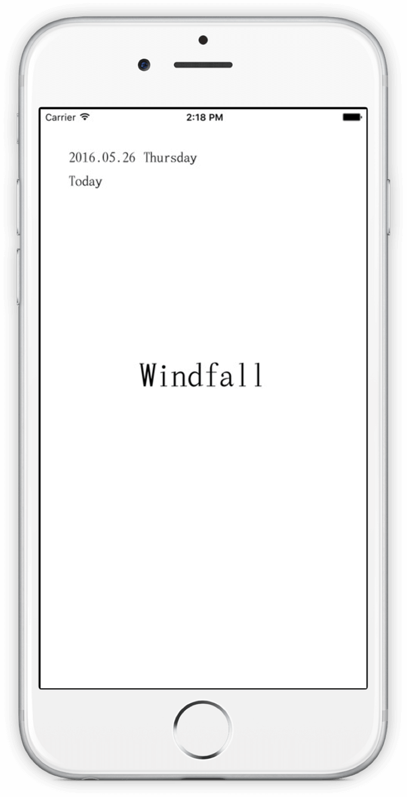
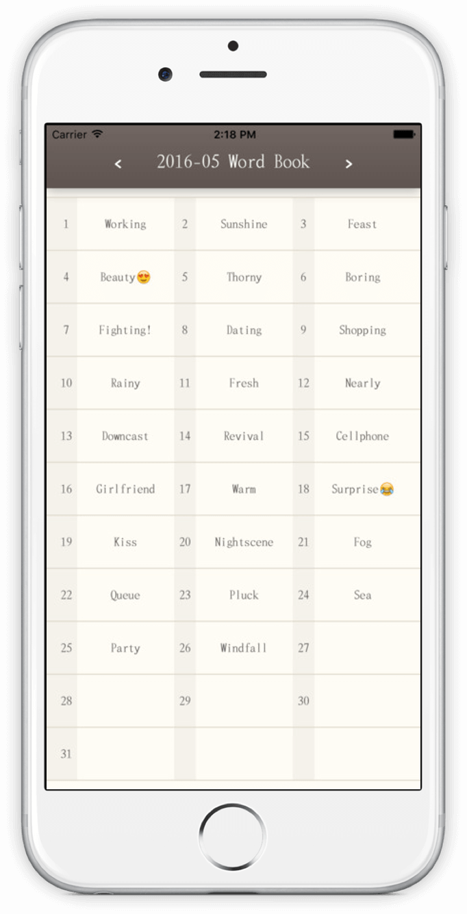
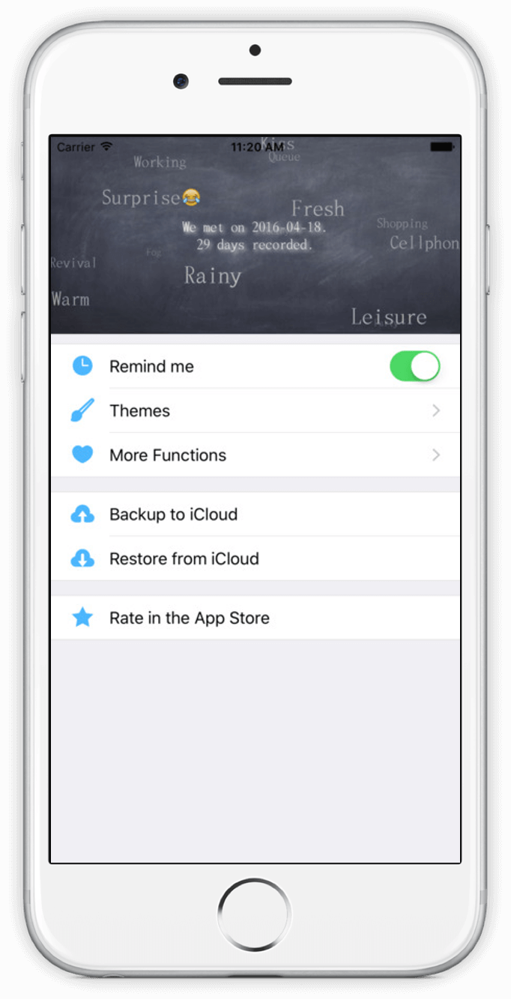

Ciji (詞記)
Use one word to keep a diary

Designed for both iPhone and iPad




You have ever written diary. Maybe homework assigned by your teacher, maybe affection memories in your teens, maybe "fighting" in your notebook after graduation, maybe notes in every evening on your trip.
Ciji (詞記), a special way to keep a diary. All things happened today, in mind, pick only one word to describe!
Time flies, maybe you cannot remember the things happened behind these words, but the feelings are clear: surprise, happy, sunshine, windfall, or disappointed, boring, rainy, restless, etc.
Yeah, it is our life.
Ciji (詞記), use one word to record today.
A word a day, keep the sadness away~